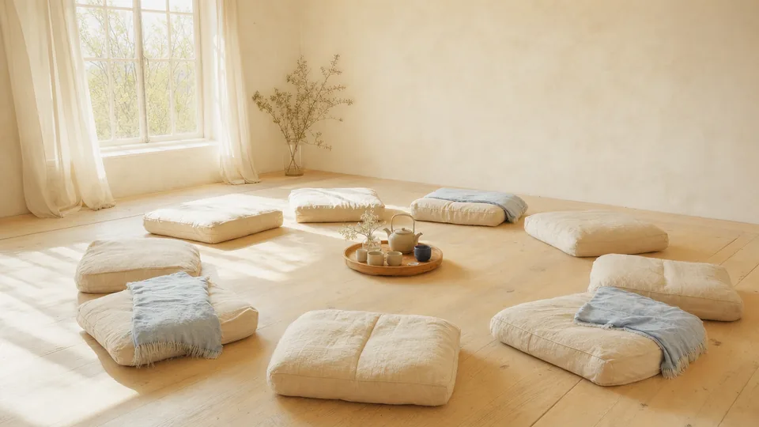
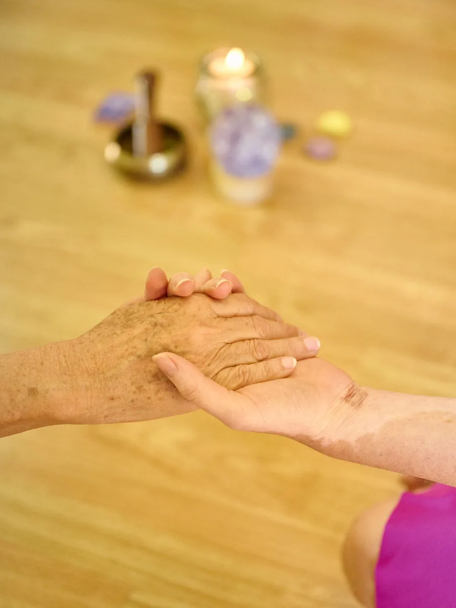
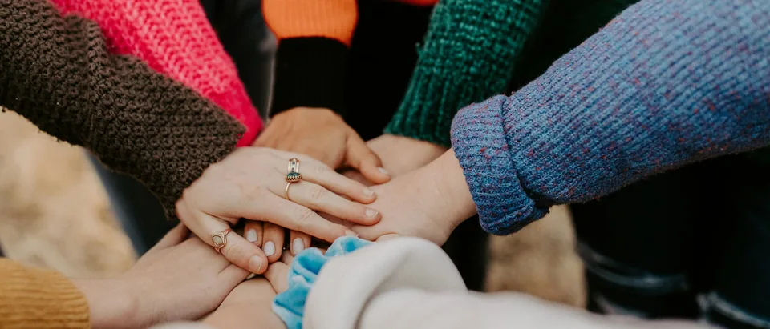
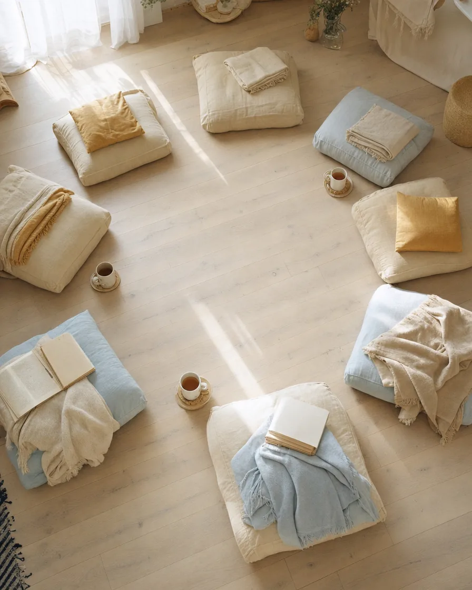
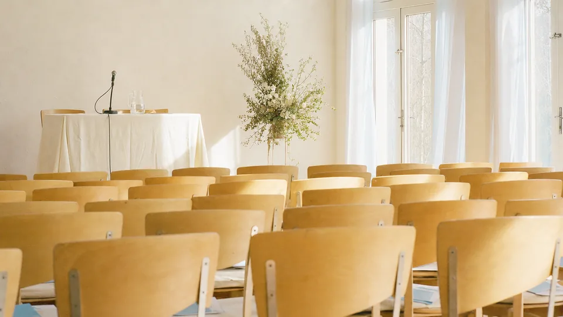

Personal growth and emotional well-being experiences to help you pause, listen to yourself and move towards a more conscious life.
We believe that every person carries within themselves potential, gifts and possibilities that can unfold when they find the right space, tools and support.
We create personal growth and emotional well-being experiences that invite you to pause, listen to yourself, understand yourself and move towards a more conscious, fulfilling life aligned with what truly matters.
Through programs, mentoring, workshops, gatherings, events and retreats —in person and online— we support processes of self-knowledge, transformation and the development of human potential.
Know yourself. Connect with yourself. Develop your potential.
Our experiences combine learning, reflection, practice and support to help you understand your inner world, strengthen your personal resources and develop new ways of relating to yourself, to others and to life.
Each offering is an opportunity to explore who you are today, recognize what you need and connect with the possibilities that want to open up on your path.

We understand personal growth as an integral process.
Thoughts, emotions, body, relationships, values, experiences and purpose are all part of the same reality: the way we live and relate to ourselves and to the world.
Rather than offering closed answers, we seek to create spaces that help each person ask new questions, broaden their perspective, recognize their own resources and make decisions that are more conscious and consistent with the life they want to build.
Our scope
Our programs, workshops, mentoring, retreats and experiences are educational and oriented towards personal growth. They do not constitute psychotherapy, diagnosis, medical treatment or mental health care, and they do not replace the assistance of qualified health or mental health professionals when it is needed.
Structured processes to deepen self-knowledge, emotional intelligence, well-being and personal growth.
Individual or group spaces designed to bring clarity, perspective and tools to move forward in personal and professional processes.
Dynamic, participatory experiences to explore specific themes related to emotions, relationships, purpose, values and human growth.
Immersive spaces that let you step out of the daily rhythm, connect deeply with yourself and go through processes of reflection, learning and transformation.

Programs, mentoring, workshops and retreats, in person and online.



Programs, workshops, mentoring, retreats and personal growth experiences.
Get in touchTell us what you need and we will get back to you as soon as possible.